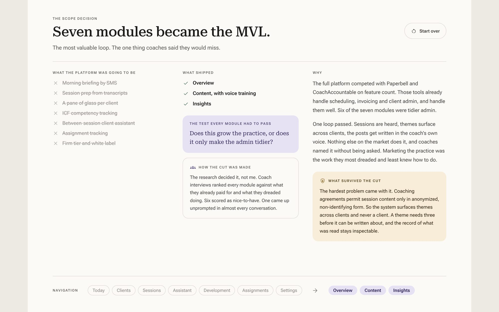
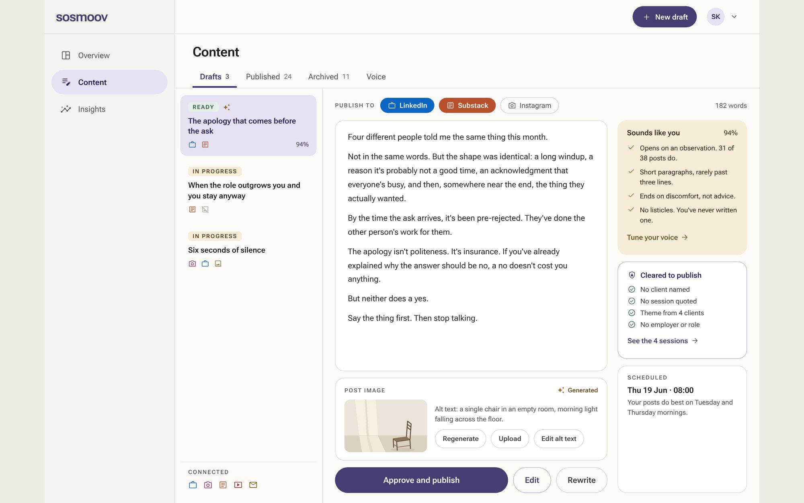
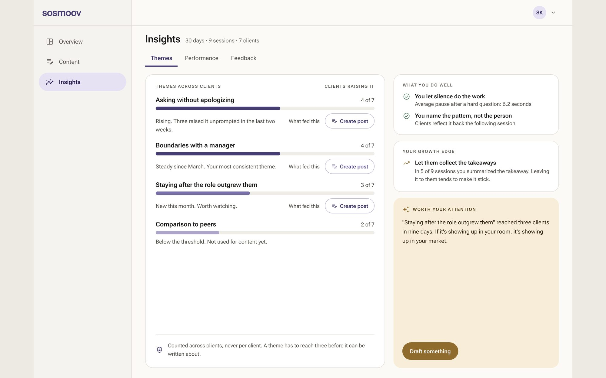
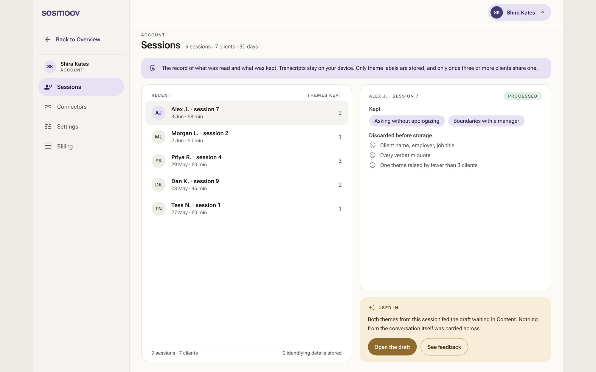
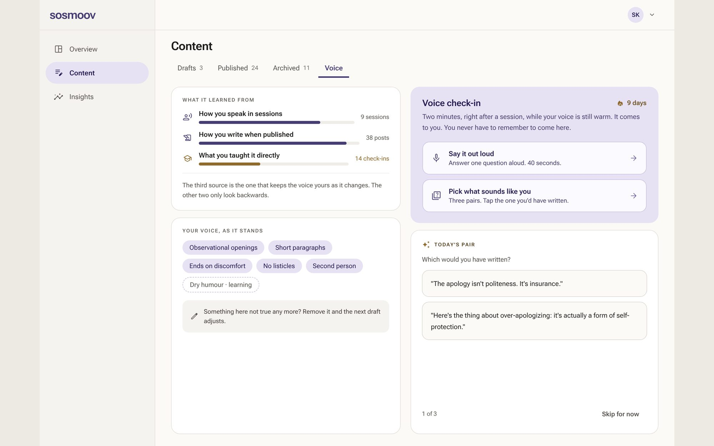
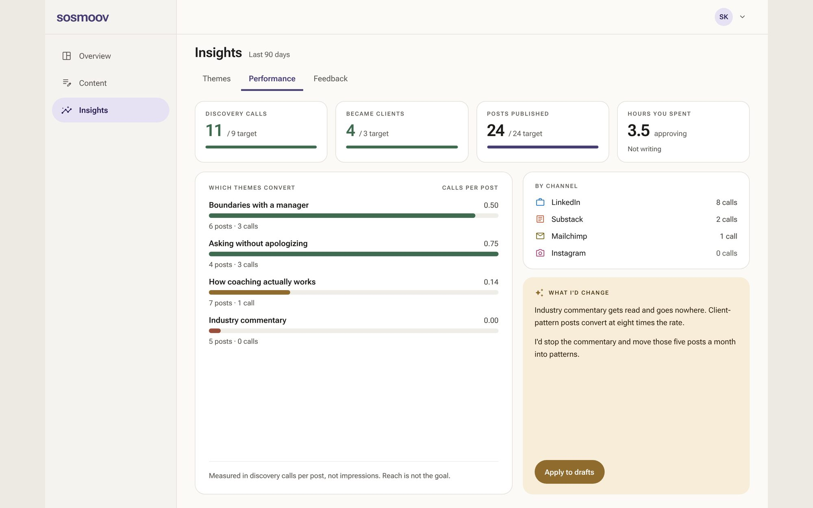
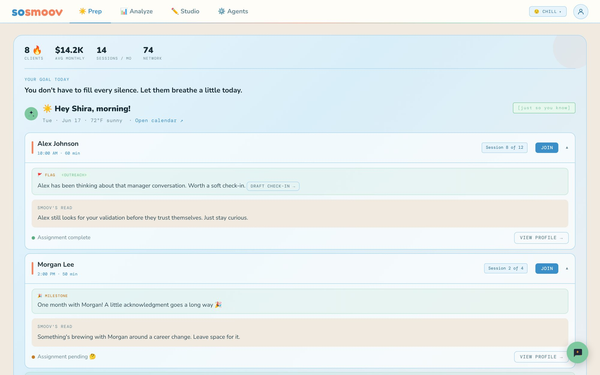
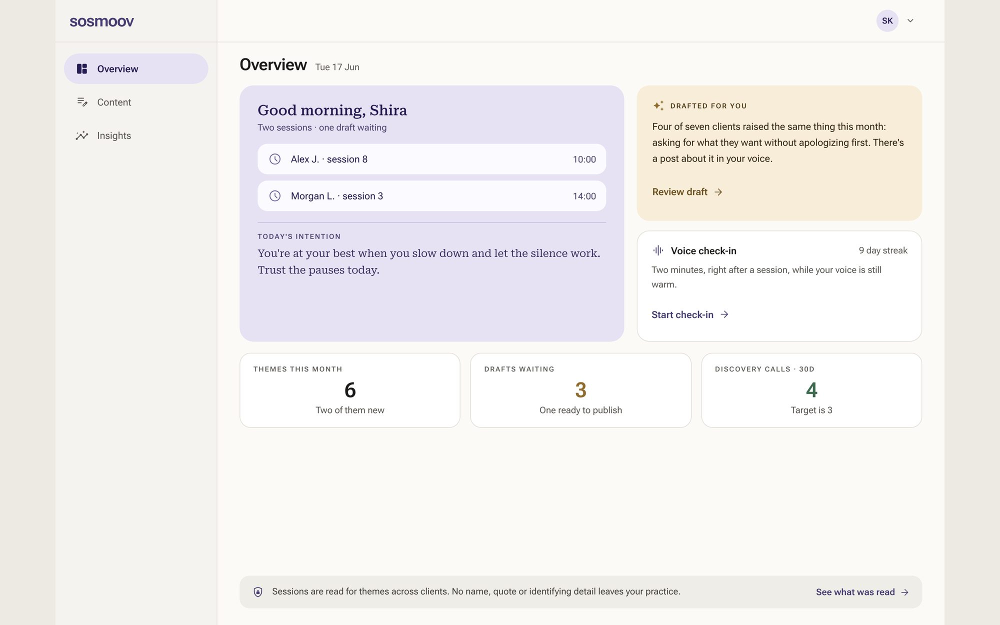

The 11pm problem
The opportunity
I started as the user. Running my own coaching practice, I was losing hours to the operational drag around the coaching itself, and the work I avoided most was marketing.
That turned out to be the pattern. A practice doesn’t grow without a voice in the market, so marketing gets done badly at 11pm, or not at all. Either way it costs practitioners clients they would have been good for.
Meanwhile the material is already there. In one week a practitioner hears the same theme from four different clients, and never gets to reflect it back to their network.
Nobody went into practice to become an influencer. But the content they struggle to write is already sitting inside their sessions.
Checking the hunch
Secondary research & competitive landscape
Before building anything, I checked whether my pain was a market. Coaches were lagging on AI and knew it. Burnout data showed the admin load was real, and a cost comparison against hiring a virtual assistant showed what practitioners were already willing to pay to get time back.
of coaches use AI tools today
say better technology is a priority for their practice
of independent consultants name sales or marketing as their main struggle
Consulting Success, 2024 (n=50,000+)Then I mapped eight platforms in three tiers, each studied for a different reason:
Paperbell, CoachAccountable, Practice
The all-in-one practice tools a new product would compete with.Strawberry.me, BetterUp
Coaching platforms, seen from the client’s side.Fathom, Calendly, Notion
What I actually used to run my practice, and where it fell short.Voice before function
Brand & design system
I built the brand and a first design system before I had talked to a single coach. That’s out of the conventional order, and I’ll own it as a working style: I think in voice before function. Knowing how a product should sound tells me a lot about what it should and shouldn’t do.
It also had a cost, which comes up in chapter 08: the first visual system didn’t survive contact with the finished product.
What practitioners told me
Interviews
I interviewed five practitioners, coaches and consultants, with a 30-minute guide: how their week really goes, what they avoid, the tools they pay for, how they feel about AI, then a reaction to the first prototype. These interviews are what narrowed the scope.
hated dealing with social posts. Every single one.
They wanted to know what to post, and to get feedback on how to grow their practice.
They’d use AI only if it could really step in for them and still sound like them.
Just as telling was what nobody raised. Scheduling and payments were things they had already solved. They managed. Marketing was the work they dreaded and least knew how to do.
Seven modules, one loop
The scope decision
After the PRD, my first prototype was the full platform: seven modules covering a practitioner’s whole day. Then I held every module to one test.
Does this grow the practice, or does it only make the admin tidier?
Six of the seven were tidier admin. Building them would have meant competing with Paperbell and CoachAccountable on feature count, against tools that already handle scheduling and invoicing well. The research decided which one survived, not me. What was left I call the MVL, the most valuable loop: sessions are heard, themes surface across clients, and posts get written in the practitioner’s voice.
Cut
- Morning briefing by SMS
- Session prep from transcripts
- A pane of glass per client
- ICF competency tracking
- Between-session client assistant
- Assignment tracking
- Firm tier and white label
Kept
- OverviewThe day at a glance, with what’s been drafted.
- Content, with voice trainingDrafts to approve, in the practitioner’s own voice.
- InsightsWhich themes recur, which posts bring discovery calls, and what clients say landed.

Themes, never clients
The confidentiality constraint
The hardest problem came with the loop. Coaching agreements permit session content only in anonymized, non-identifying form, and not for marketing. A product that turns sessions into posts has to be built around that line, not patched to respect it.
So the system surfaces themes across clients and never a client. A theme needs three clients before it can be written about. A draft can’t be scheduled until four checks pass: no client named, no session quoted, the theme comes from enough clients, and no employer or role is mentioned.


Trust you can check
Design decisions
- Provenance from the claim, not the navigationThe record of what was read sits under Account, but you reach it from the claim itself: “what fed this” on a theme, “see the 4 sessions” on a draft’s clearance panel. Trust needs to be verifiable, not prominent.
- No named assistantv1 had a named assistant with an avatar. On an intelligence product a mascot reads as decoration, so v2 has no name and no face, just a sparkle marking AI output.
- Voice training as a ritual, not a settings pageThe voice profile lives in Content, but the training prompt comes to you right after a session, while your voice is warm. Two minutes, with a streak. Duolingo logic.
- The list never disappearsDrafts open beside the list rather than in a separate editor, so reviewing three drafts doesn’t mean losing your place three times.
- Measured in discovery calls, not impressionsInsights reports discovery calls per post, because reach isn’t the goal. Clients are.



A system that doesn’t look generated
Design system, v1 to v2
v1 used Fredoka One and Nunito, and it read as AI-generated: friendly, rounded and interchangeable with a hundred other tools. For a product whose whole promise is sounding like a real person, that was the wrong first impression. So v2, the MVP, was rebuilt on a new system.
I used Material 3 as a reference: Roboto Flex for UI, Roboto Serif for editorial moments, and Material Symbols Rounded at weight 300. One primary indigo-violet, warm neutrals, and tonal surfaces instead of hairline borders. One warm brass accent is reserved exclusively for AI-generated output, so you can always tell what the system wrote.


Where it stands
Status & artifacts
The MVP prototype is live. It walks through the loop in seven screens and ends on the scope decision.
- Interview guideThe 30-minute practitioner interview, with a Calendly screener
- Product briefThe product requirements: problem, research, the full platform and the business model
- UX research documentSecondary research, with citations
- Competitive research logEight platforms in three tiers, interactive
- v1 design system & component libraryDocumentation and React components
What I learned
Reflection
What worked
- Holding every module to one blunt test. It made a hard cut feel obvious.
- Treating confidentiality as the core design problem rather than a compliance step. It became the most defensible part of the product.
- Being the user. I knew where the hours went before I asked anyone.
What I’d do differently
- Apply the test sooner. I built the full seven-module prototype before cutting it to one loop, and most of that work could have been skipped.
- Keep voice-first, but hold the visual system loosely until the scope is settled.
- Talk to more people, and test whether practitioners will pay for the loop, not just say they want it.